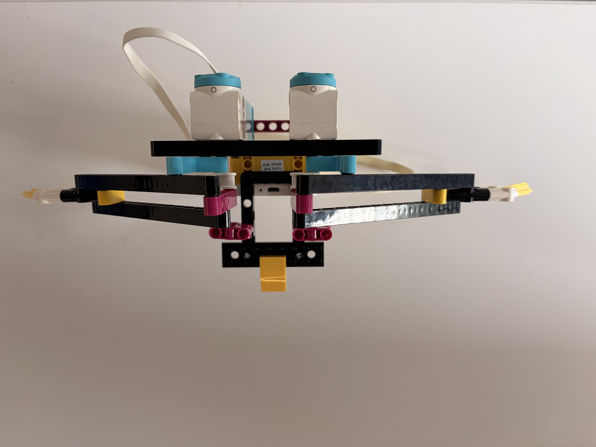
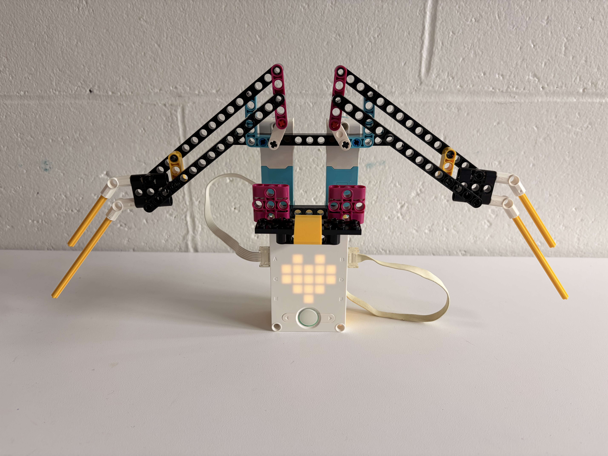
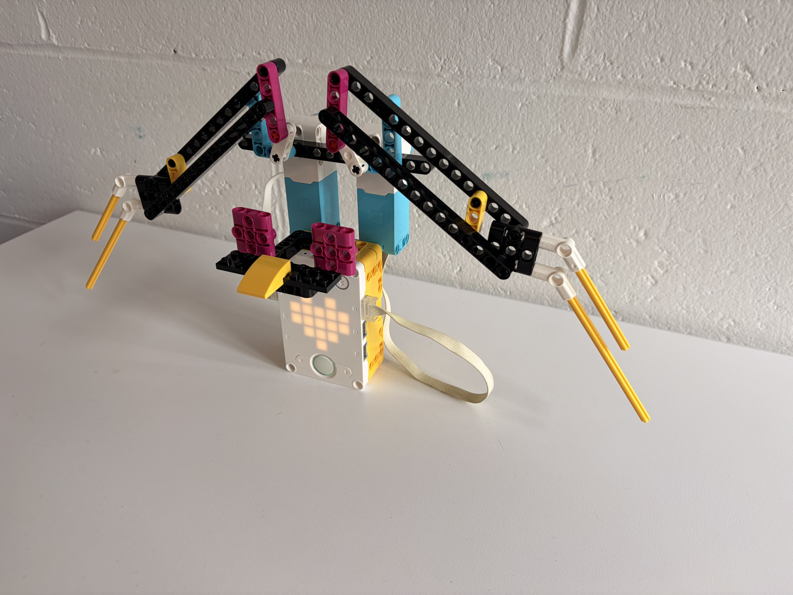
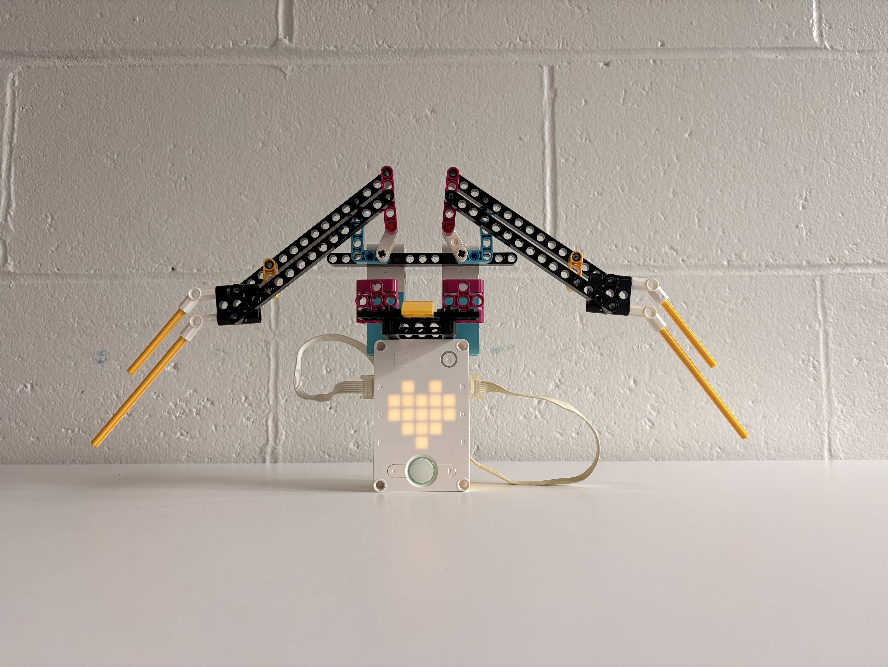

For this project, I used the LEGO Spike Prime set to design a robot inspired by a bird's wing. The biggest challenge was turning the motor's rotational motion into the linear, flapping motion of a real wing. I worked through this by building multiple pivot points into the linkage, which let the arms rotate around each other and produce the flapping motion shown in the photos below.


